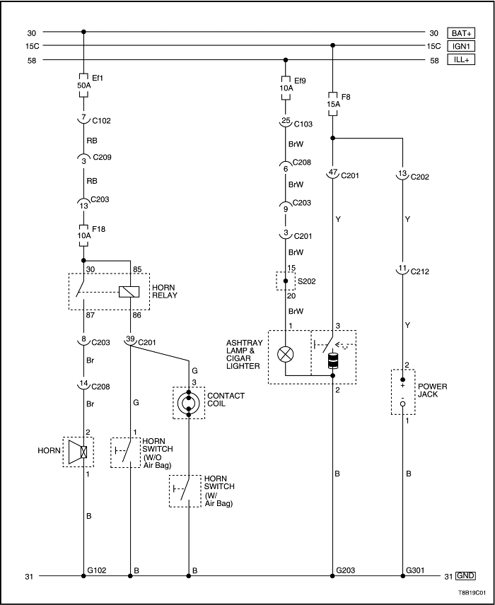
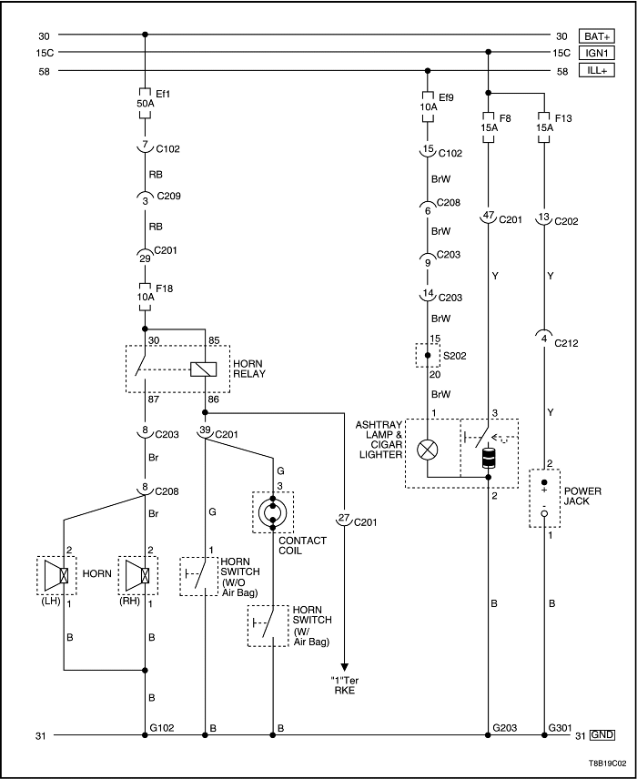
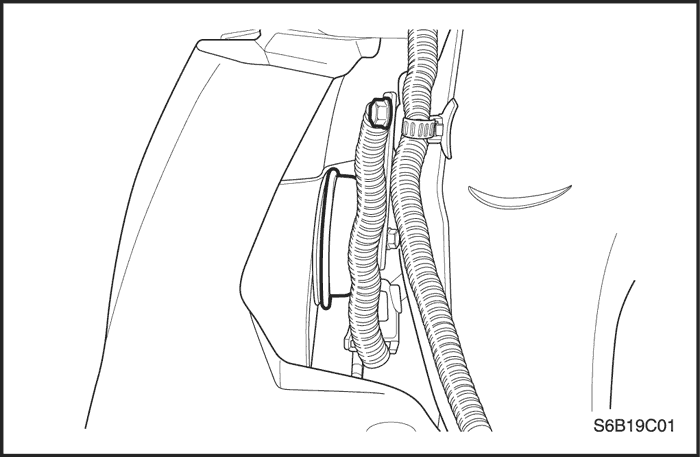

SECCIÓN 9C
CLAXON
Precaución: Desconecte el cable negativo de la batería antes de desmontar o instalar cualquier unidad eléctrica o cuando exista la posibilidad de que una herramienta o equipo pueda entrar en contacto con bornes eléctricos expuestos. La desconexión de dicho cable ayudará a evitar lesiones personales y daños al vehículo. La llave de contacto debe estar en posición LOCK a menos que se indique lo contrario.
ESPECIFICACIONES
Especificaciones de apriete
|
Aplicación
|
N•m
|
Árbol de transmisión izquierdo
|
Articulación
|
|
Tornillo del claxon
|
21
|
16
|
-
|
DIAGRAMAS DE ESQUEMAS Y DIRECCIONES
Circutio de la bocina, toma de corriente, luz del cenicero y encendedor - Notchback



Circutio de la bocina, toma de corriente, luz del cenicero y encendedor - Hatchback

MANTENIMIENTO Y REPARACIÓN
servicio con vehículo en marcha

Claxon, bocina
Procedimiento de desmontaje
- Desconecte el cable negativo de la batería.
- Quite los tornillos de fijación del faro.
- Desenchufe los conectores eléctricos.
- Desmonte el conjunto del faro.
- Quite el tornillo del claxon.
- Desenchufe el conector eléctrico.
- Desmonte el claxon.
procedimiento de montaje
- Enchufe el conector eléctrico.
- Monte el claxon con su tornillo.
Apretar
Apriete el tornillo del claxon hasta 21 N•m (16 lb-pie).
- Enchufe los conectores eléctricos de los faros.
- Monte el conjunto del faro con cintas.
Apretar
Apriete los tornillos del conjunto del faro hasta 4 N•m (35 lb-pulg.).
- Conecte el cable negativo de la batería.
DESCRIPCIÓN GENERAL Y FUNCIONAMIENTO DEL SISTEMA
Claxon, bocina
El claxon se encuentra debajo del capó. Está sujeto cerca del radiador en la parte delantera del vehículo. El claxon se acciona pulsando la pastilla del volante, que conecta su circuito eléctrico a masa.